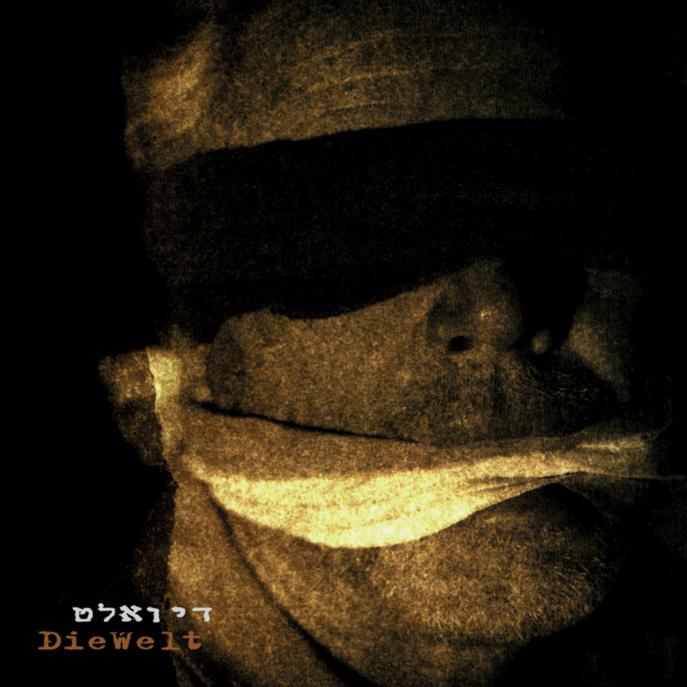

דיואלט
אדם/קבוצה
הלהקה בעיתון העיר, 1996
דיואלט (בגרמנית: Die Welt, העולם) הייתה להקת רוק אלטרנטיבי שפעלה בין 1992-1996. המוזיקה שלהם משלבת השפעות של אינדסטריאל, מוזיקה אלקטרונית ואקספרימנטלית. הלהקה הוקמה באזור שנת 1992; בהתחלה שרו בניה רכס ועידו דרורי, ולאחר כמה שנים שבהן חיפשו זמרים אחרים, מצאו את אלון אבנת והוא היה הזמר מאז. לאלון היה קשר לגבריאל בן־חורין מלהקת ישראל; הוא היה חלק מחבורה שהתאספה סביבו והיו נפגשים איתו, ואבנת הושפע מדרכו ומשנתו הפילוסופית, דבר שמתבטא בטקסטים ובתכנים שבהם עסקו הלהקות שהיה חבר בהן מאז.
הם הופיעו בפרגוד ובמקומות רבים אחרים בירושלים, בין השאר בסינמטק ירושלים במסגרת מרתון סרטים, באזור שנת 1996. בתחילת הדרך הופיעו אף בכמה בתי אבות ומרכזים קהילתיים. מלבד זאת חיממו את ברי סחרוף ואת הג'ינג'יות, בהן חבר תמיר אלברט מנושאי המגבעת. הלהקה הוציאה אלבום אחד ששמו כשם הלהקה בשנת 1996 בחברת נענע דיסק.
ב־2014 הלהקה התאחדה, יחד עם הגיטריסט אלון כהן, להופעה במסגרת פסטיבל "החזית" שארגן גילי לוי עם אנשים שקשורים לרדיו רעש Hour.

עטיפת האלבום "דיואלט"
ביקורת על האלבום
אחרי פירוק הלהקה המשיכו חבריה כל אחד בדרכו. אלון אבנת היה חלק מסטודיו ב12, והשתתף בכמה הרכבים מאז, בהם מוג'הידין (עם הראל שרייבר [מיול דרייבר] ואורי קריסטל מהאוגנדה), ואנדרטה עם שאול קוהן ואיתי אנקר, שהוציאו מוזיקה ברעש רקורדס. בניה רכס היה חבר בחזית האלקטרונית וטפט, ומאז עוסק באמנות סאונד ועיצוב סאונד לוידיאו. כמו כן השתתף בהרכב האימפרוביזציה יום גגאצי עם אורי קצנשטיין ואוהד פישוף. עידו דרורי עזב את הלהקה לפני הפירוק וחזר בתשובה.